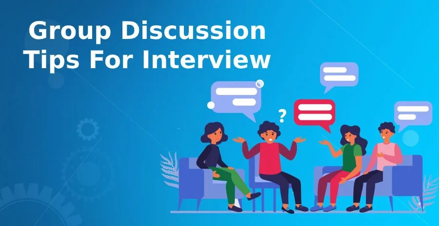
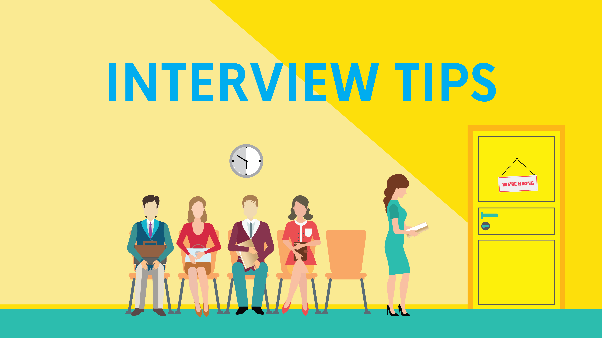
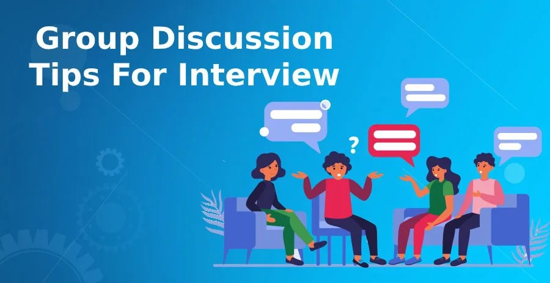
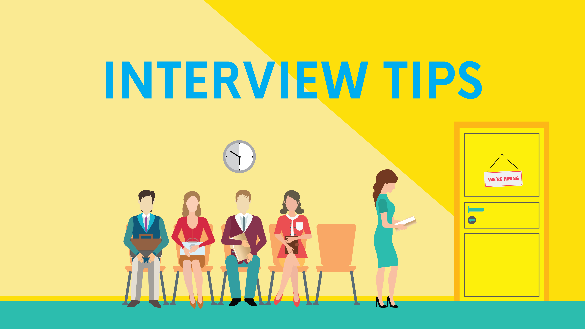
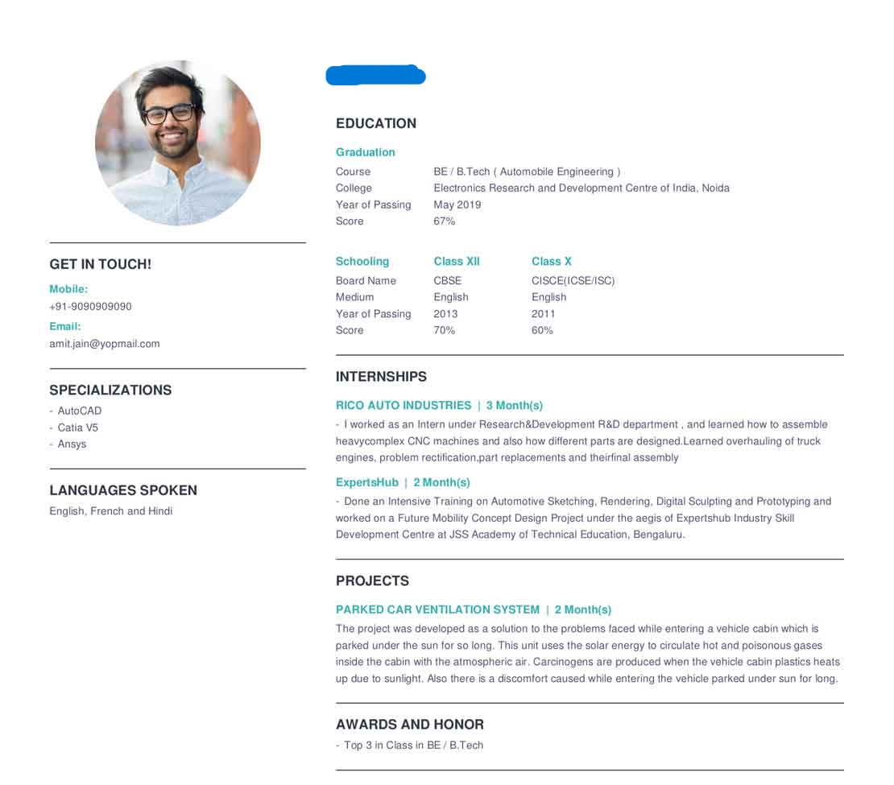
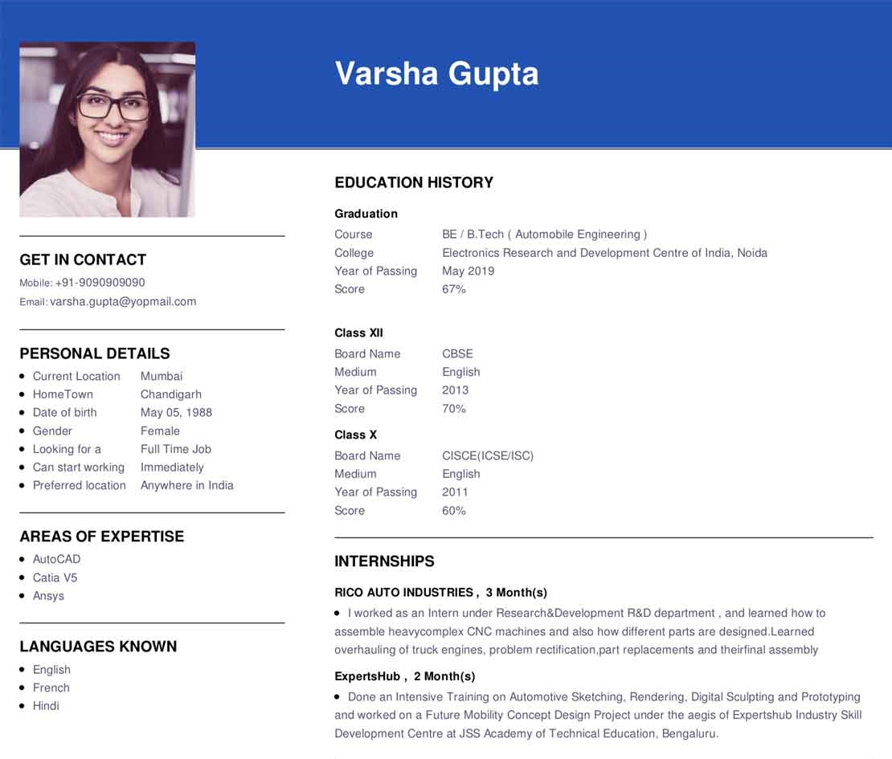

Today everyone wants to earn money i.e.Job
after taking any degree.So we are here to
guide you about the process of placements
and hiring in various companies. we will
help you in your preparation for various
things like resume building, communication
skills,aptitude as well as attitude,group
discussions cracking tacticts,books to refer
for preparation and all things.you need because
these are the all things needed along with
technical knowledge to get placed in good
company. Generally there are 3 to 4 rounds
are there for getting placed:
click on the respective
section to get more
information.
BASIC THINGS:
1. Resume Tips
CLICK ON THE ABOVE PICTURE TO BUILD YOUR RESUME
A resume is a document commonly used in the hiring process. It includes information
about your background and qualifications and should communicate the most important,
relevant information about you to employers in a clear, easy-to-read format. The goal
is to quickly communicate why you are uniquely qualified for the position based on
your skills and experiences.
To create a resume that will get noticed by employers, you can follow a few simple
steps and best practices. The main goal to keep in mind is to make your resume
relevant and readable.
Step 1: Before you write a resume, understand how to prepare a resume.
Step 2: Understand the key sections of a resume.
Step 3: Choose the right resume format.
Step 4: Add your contact information.
Step 5: Resume summary or resume objective?
Step 6: Capture your work experience.
Step 7: Highlight your top skills.
Step 8: Write your education, certifications, licenses and honors sections.
Step 9: Proofread, check your formatting and save.
Resume examples
 2. Communication Skills.
Good Communication Skills are crucial to a Job Interview because they are
the means to express and transmit the reasons why the interviewee is a great
fit for the role and the organization. And it's often a key factor in getting
or losing a job opportunity!
practices that will improve your Communication Skills:
1)Increase your vacabulary:- Try to increase your vacabulary by reading books,
magzines and journals
2)Mirror practice:- Practice to deliver your self introduction before Mirror
to boost your confidence
3)Newspaper reading:- This will help you to get update knowledge about current
happenings about technology and other things,which will
make you stand different from others.